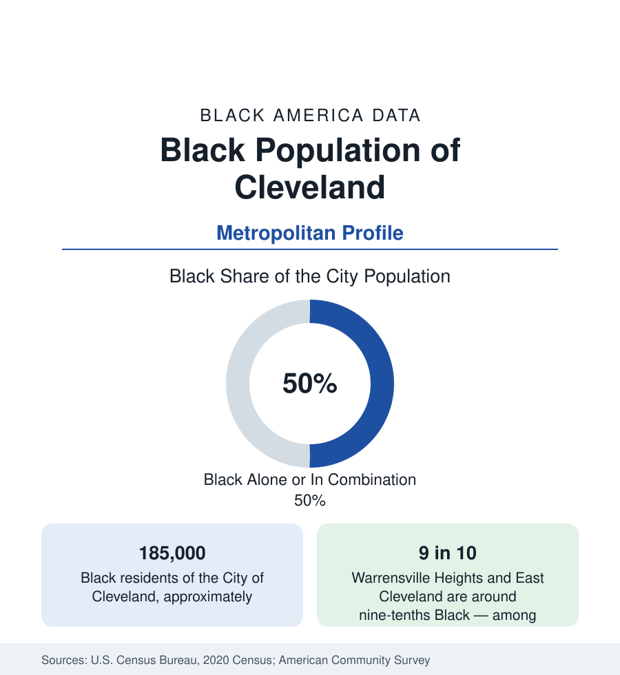

Black Cities
Black Cleveland: Nearly Half of the City on the Lake
Cleveland holds about 185,000 Black residents — nearly half the city — in a Great Migration metropolis whose Black suburbs are among America's oldest. The census profile.

Cleveland holds about 185,000 Black residents — Black alone or in combination, essentially half of the city's 373,000 people — and about 360,000 across the metropolitan area. Cleveland was one of the Great Migration's first destinations and among its most complete transformations: a city that was roughly 2 percent Black in 1910 became nearly half Black a century later, as its total population halved from its industrial peak. The modern data describe a Black metropolis distributed between an east side of historic neighborhoods and a ring of Black suburbs that includes some of the oldest majority-Black suburbs in America.
The East Side Metropolis
Black Cleveland is an east side city. The migration-era community formed along Central Avenue and in Cedar-Central, then spread east through Hough, Glenville, Fairfax, Mount Pleasant, Lee-Harvard, and Buckeye-Shaker — a continuous Black urban landscape of brick apartment blocks, single-family streets, and commercial corridors, anchored by institutions like Karamu House (founded in the 1910s, the nation's oldest Black theater company) and a dense church geography. The west side remained largely outside the historic pattern, its Black population smaller and more recent — the city's internal divide, drawn at the Cuyahoga River, still legible in the tract data a century on. University Circle, at the east side's edge, concentrates the region's eds-and-meds economy — the Cleveland Clinic and University Hospitals, Case Western Reserve — the largest employers in the region and in Black Cleveland's professional life.
The Black Suburbs: America's Oldest Ring
Cleveland's suburbs contain a distinction few metros share: a set of majority-Black suburbs incorporated and built out in the postwar decades, now in their third generation. East Cleveland, directly adjoining the city, is around nine-tenths Black — and carries among the most difficult municipal fiscal data in Ohio, a small city whose tax base collapsed with its industry. Warrensville Heights, at a similar Black share, presents the opposite profile: a stable, middle-class homeowner suburb, long a destination for Black Cleveland's professional families. Maple Heights, Bedford Heights, Garfield Heights, and Euclid — the last transformed from a nearly all-White industrial suburb to roughly half Black within two generations — complete a ring whose aggregate Black population now rivals the city's east side, and whose schools, churches, and businesses form a complete suburban Black infrastructure.
Economy and Indicators
The economic data carry the industrial story in full. Cleveland's Black poverty rate runs above 30 percent in the survey data — among the highest of the large cities in this section — and Black median household income trails the metro's other large-city figures, the arithmetic of a city whose manufacturing base collapsed and whose remaining employment concentrates in health care, education, and services. The counterweights are the region's medical economy (whose workforce the employment section profiles), a large public sector, and the suburban homeowners' equity. The city's overall population loss has slowed to near stability in the recent estimates, and its Black population declines slowly with it — shares rising as totals edge down, the industrial pattern the Ohio profile records statewide.
Composition and Change
Black Cleveland is overwhelmingly native-born and Great Migration-descended, its families' southern roots in Alabama, Mississippi, and Georgia visible in the birthplace data of its elders; smaller Caribbean and African communities have layered into the east side and its suburbs in recent decades. The political data point (kept to demography here) is structural: a city half Black elects from a Black-majority electorate in most districts, and its Black institutional class — in the hospitals, the universities, the county government — is the region's most established. What the data cannot show is a growth engine: Cleveland is the profile of a mature Black metropolis managing contraction with depth.
Reading the Cleveland Numbers
Cleveland completes the industrial belt sequence of this section — Detroit, Chicago, Milwaukee's peers in pattern. Its lesson is the suburbs: nowhere else did Black suburbanization happen so early or so completely, and the contrast between East Cleveland's fiscal data and Warrensville Heights's stability, ten minutes apart at the same Black share, is the section's cleanest proof that demography alone determines nothing about a community's economics.
Cuyahoga County's full Black population, city and suburbs together, approaches 400,000 in the county tables.
More in Black Cities
Black Atlanta: Population, Distribution, and Growth of a Black Metropolis
Metro Atlanta holds more than two million Black residents — roughly one in three, second only to New York. The suburban distribution, migration history, and composition of Black Atlanta in the census data.
Black New York: The Largest Black Population in America
The New York metropolitan area holds about 3.4 million Black residents — more than any metro in the nation — and the city itself about two million. The census profile.
Black Washington: The District and the Metro
The Washington metro holds about 1.6 million Black residents, and the District itself — long a majority-Black city — now records a Black share near 41 percent. The census profile.
Source: U.S. Census Bureau, 2020 Census; American Community Survey; Population Estimates Program.